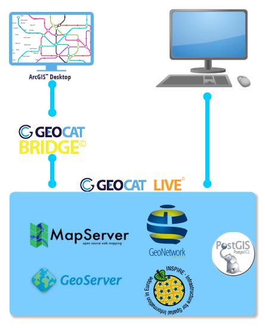
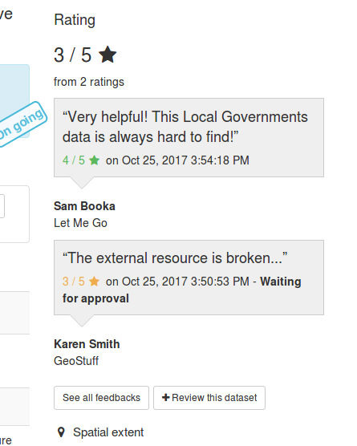

GeoNetwork: State of the Art
María Arias de Reyna
@delawen
at
@geocat_bv

Quick Overview
Stable usage with slowly increase
no stats from docker
Quick Overview
From 2017 we started using PR much more
First half of 2018 almost as much as 2017
Quick Overview
Mostly developed by europeans
on their work time
Quick Overview
Bolsena Codesprint
where we try to catch up
Recent Developments
Improve on accesibility
Improve on usability
Less hardcoded elements (like gazetteer)
More audits and bug fixes
REST API
User Feedback (using opendata)

Incoming Developments
Elastic Search to replace Lucene!! (4.0.0)
Draft version
Better administration, statistics, logs
New way of working
Focus on master
More speed on minor releases (3.x)
Path releases really only patches (3.x.y)
Come and ask about GeoNetwork Enterprise
Any questions?